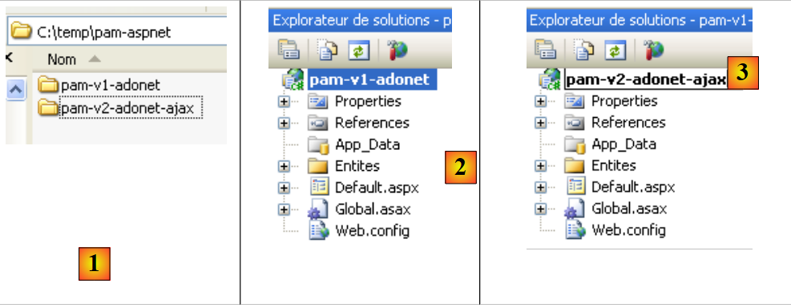
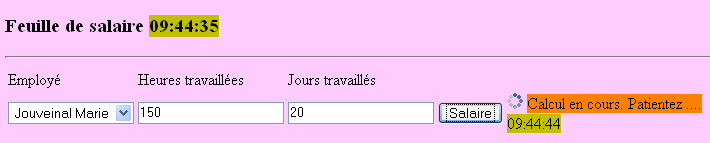
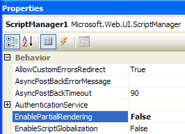

5. Die Anwendung [SimuPaie] – Version 2 – AJAX / ASP.NET-
5.1. Einführung
Die AJAX-Technologie (Asynchronous JavaScript and XML) vereint eine Reihe von Technologien:
- JavaScript: Eine im Browser angezeigte HTML-Seite kann JavaScript-Code enthalten. Dieser Code wird vom Browser ausgeführt, sofern der Benutzer die Ausführung von JavaScript in seinem Browser nicht deaktiviert hat. Diese Technologie gibt es bereits seit den Anfängen des Internets und hat dank AJAX seit 2005 ein wiederauflebendes Interesse erfahren.
- DOM: Document Object Model. Der in eine HTML-Seite eingebettete JavaScript-Code hat Zugriff auf das Dokument in Form eines Objektbaums, dem DOM. Jedes Element des Dokuments (ein Eingabefeld, ein benanntes div-Tag, ein select-Tag usw.) wird durch einen Knoten im Baum dargestellt. JavaScript-Code kann das angezeigte Dokument ändern, indem er das DOM modifiziert. So kann er beispielsweise den in einem Eingabefeld angezeigten Text über den DOM-Knoten ändern, der dieses Feld repräsentiert.
AJAX nutzt JavaScript, um im Hintergrund den Austausch zwischen Browser und Server durchzuführen. Um auf ein Ereignis wie einen Klick auf eine Schaltfläche zu reagieren, wird JavaScript-Code vom Browser ausgeführt, um eine HTTP-Anfrage an den Server zu senden. Diese Anfrage enthält Parameter, die dem Server mitteilen, was zu tun ist. Der Server führt dann die angeforderte Aktion aus. Als Antwort sendet er dem Browser einen HTTP-Stream mit Daten, die eine teilweise Aktualisierung der aktuell angezeigten Seite ermöglichen. Dies erfolgt über das DOM des Dokuments und die Ausführung von im Dokument eingebettetem JavaScript-Code. Die vom Server zurückgegebenen Daten können verschiedene Formate haben: XML, HTML, JSON, Klartext usw.
Der Vorteil dieser Technologie liegt in dieser teilweisen Aktualisierung des angezeigten Dokuments. Das bedeutet:
- weniger Datenaustausch zwischen Client und Server, was zu einer schnelleren Antwort führt
- eine flüssigere grafische Benutzeroberfläche, da Benutzeraktionen kein vollständiges Neuladen der Seite auslösen.
In einem Intranet mit schnellem Netzwerkverkehr ermöglicht AJAX die Erstellung von Webanwendungen, die sich ähnlich wie herkömmliche Windows-Oberflächen verhalten. Es ist möglich, Ereignisse wie eine Auswahländerung in einer Liste zu verarbeiten und die Seite sofort teilweise neu zu laden, um diese Änderung widerzuspiegeln. Die Tatsache, dass die Seite nicht vollständig neu geladen wird, vermittelt dem Benutzer das gleiche Gefühl von Flüssigkeit, das er von Windows-Anwendungen kennt. Bei Webanwendungen, bei denen die Antwortzeiten lang sein können, bleibt die AJAX-Technologie nutzbar, doch hängt die wahrgenommene Flüssigkeit von der Leistung des Netzwerks ab.
Die größte Herausforderung bei AJAX ist die Sprache JavaScript. Entstanden in den Anfängen des Webs,
- erweist sie sich für die objektorientierte Programmierung als unpraktisch. Beispielsweise ist sie keine typisierte Sprache. Man deklariert den Typ der zu bearbeitenden Daten nicht. In dieser Hinsicht ähnelt sie Sprachen wie Perl oder PHP.
- Es gibt keinen von allen Browsern akzeptierten Standard. Jeder Browser verfügt über eigene proprietäre JavaScript-Erweiterungen, was bedeutet, dass für den Internet Explorer geschriebener JavaScript-Code möglicherweise nicht in Mozilla Firefox funktioniert und umgekehrt.
- Die Fehlersuche ist schwierig, da Browser keine leistungsfähigen Tools zur Fehlerbehebung des von ihnen ausgeführten JavaScript-Codes bieten.
All diese Mängel von JavaScript führten dazu, dass es vor dem Aufkommen von AJAX nur selten verwendet wurde. Sobald der Nutzen der Ausführung von JavaScript-Code im Hintergrund – um HTTP-Anfragen an den Webserver zu stellen und dessen Antwort zu nutzen, um über das DOM eine teilweise Aktualisierung des angezeigten Dokuments durchzuführen – erkannt wurde, machten sich Entwicklungsteams an die Arbeit und schlugen Frameworks vor, die AJAX ermöglichen, ohne dass der Entwickler JavaScript-Code schreiben muss. Um dies zu erreichen, wurden JavaScript-Bibliotheken entwickelt, die sich an den Client-Browser anpassen können. Das Einfügen von JavaScript-Code in die an den Browser gesendete HTML-Seite erfolgt serverseitig unter Verwendung von Techniken, die je nach verwendetem AJAX-Framework variieren. AJAX-Frameworks sind für Java, .NET, PHP, Ruby und weitere Sprachen verfügbar. AJAX ist in Visual Web Developer 2008 integriert.
5.2. Das Visual Web Developer-Projekt in der [ web-ui-ajax]-Ebene
Die neue Version wird durch Duplizieren der vorherigen Version erstellt. Es wird nur die Seite [Default.aspx] geändert.
 |
- Duplizieren Sie in [1] mit dem Windows Explorer den Projektordner [pam-v1-adonet] und benennen Sie ihn in [pam-v2-adonet-ajax] um. Öffnen Sie dann mit Visual Web Developer das Projekt (Datei / Projekt öffnen) aus diesem neuen Ordner [2]
- Benennen Sie es in [3] um
 |
- Ändern Sie in den Eigenschaften des neuen Projekts den Assembly-Namen [4] und den Standard-Namespace [5].
Ersetzen Sie anschließend den Namespace [pam_v1] durch den Namespace [pam_v2] in den Dateien [Default.aspx, Default.aspx.cs, Default.aspx.designer.cs, Global.asax, Global.asax.cs], um die Konsistenz mit dem Standard-Namespace sicherzustellen. Beispielsweise wird [Default.aspx] [6] zu:
<%@ Page Language="C#" AutoEventWireup="true" CodeBehind="Default.aspx.cs" Inherits="pam_v2._Default" %>
...
Die Seite [ Default.aspx] wird wie folgt geändert:
 |
- Hinzufügen von Ajax-Komponenten zum Formular [Default.aspx] (siehe [2] oben).
- 2A: Die <asp:ScriptManager>-Komponente ist für jedes AJAX-Projekt erforderlich
- 2B: Die <asp:UpdatePanel>-Komponente dient dazu, den Bereich zu definieren, der aktualisiert werden soll, wenn der Benutzer eine POST-Anfrage sendet. Diese Komponente verhindert, dass die gesamte Seite neu geladen wird.
- 2C: Die <asp:UpdateProgress>-Komponente wird verwendet, um während der Aktualisierung Text oder ein Bild anzuzeigen und den Benutzer zu informieren, wie unten dargestellt:
 |
- (Fortsetzung)
- 2D: Ein Label-Steuerelement namens LabelHeureLoad, das den Zeitpunkt anzeigt, zu dem der Load-Ereignishandler der Seite ausgeführt wird.
- 2E: Ein Label mit dem Namen LabelHeureSalaire, das den Zeitpunkt anzeigt, zu dem der Click-Ereignisbehandler für die Schaltfläche [Salaire] ausgeführt wird. Wir möchten zeigen, dass Ajax nicht die gesamte Seite neu lädt, wenn auf die Schaltfläche [Salaire] geklickt wird. Dies ist im vorherigen Screenshot zu sehen, wo in den beiden Labels zwei unterschiedliche Zeitangaben zu erkennen sind.
Die vorangegangene Ajax-Anpassung des Formulars kann direkt im Quellcode von [Default.aspx] durch Hinzufügen von Ajax-Erweiterungs-Tags erfolgen:
...
<body style="text-align: left" bgcolor="#ffccff">
<h3>
Feuille de salaire
<asp:Label ID="LabelHeureLoad" runat="server" BackColor="#C0C000"></asp:Label></h3>
<hr />
<form id="form1" runat="server">
<asp:ScriptManager ID="ScriptManager1" runat="server" EnablePartialRendering="true" />
<asp:UpdatePanel runat="server" ID="UpdatePanelPam" UpdateMode="Conditional">
<ContentTemplate>
<div>
<table>
<tr>
...
<tr>
<td>
<asp:DropDownList ID="ComboBoxEmployes" runat="server">
</asp:DropDownList></td>
<td>
<asp:TextBox ID="TextBoxHeures" runat="server" EnableViewState="False">
</asp:TextBox></td>
<td>
<asp:TextBox ID="TextBoxJours" runat="server" EnableViewState="False">
</asp:TextBox></td>
<td>
<asp:Button ID="ButtonSalaire" runat="server" Text="Salaire" CausesValidation="False" /></td>
<td> <asp:UpdateProgress ID="UpdateProgress1" runat="server">
<ProgressTemplate>
<img src="images/indicator.gif" />
<asp:Label ID="Label5" runat="server" BackColor="#FF8000" EnableViewState="False"
Text="Calcul en cours. Patientez ...."></asp:Label>
</ProgressTemplate>
</asp:UpdateProgress>
<asp:Label ID="LabelHeureSalaire" runat="server" BackColor="#C0C000"></asp:Label></td>
</tr>
<tr>
...
</tr>
</table>
</div>
<br />
....
<table>
<tr>
<td>
Salaire net à payer :
</td>
<td align="center" bgcolor="#C0C000" height="20px">
<asp:Label ID="LabelSN" runat="server" EnableViewState="False"></asp:Label></td>
</tr>
</table>
</asp:Panel>
</ContentTemplate>
</asp:UpdatePanel>
</form>
</body>
</html>
- Zeile 8: Jedes Ajax-fähige Formular muss das <asp:ScriptManager>-Tag enthalten. Dieses Tag ermöglicht die Verwendung neuer Ajax-Komponenten:
 |
- Das <asp:ScriptManager>-Tag kann durch Doppelklicken auf die obenstehende [ScriptManager]-Komponente hinzugefügt werden. Vergewissern Sie sich, dass dieses Tag im Quellcode innerhalb des <form>-Tags enthalten ist. Das Attribut [EnablePartialRendering="true"] in Zeile 8 fehlt standardmäßig. Da „true“ der Standardwert ist, ist es nicht zwingend erforderlich.
- Zeile 9: Das <asp:UpdatePanel>-Tag wird verwendet, um die Bereiche der Seite abzugrenzen, die bei einer teilweisen Seitenaktualisierung aktualisiert werden müssen. Das Attribut [UpdateMode="Conditional"] gibt an, dass der Bereich nur als Reaktion auf ein AJAX-Ereignis von einer Komponente innerhalb des Bereichs aktualisiert werden soll. Der andere Wert ist [UpdateMode="Always"], was der Standardwert ist. Mit diesem Attribut wird der UpdatePanel-Bereich systematisch aktualisiert, selbst wenn das aufgetretene AJAX-Ereignis von einer Komponente in einem anderen UpdatePanel-Bereich stammt. Im Allgemeinen ist dieses Verhalten unerwünscht.
Das <asp:UpdatePanel>-Tag unterstützt zwei untergeordnete Tags: <ContentTemplate> und <Triggers>.
- Die <asp:ContentTemplate>-Tags in den Zeilen 10 und 53 definieren den Bereich der Seite, der teilweise aktualisiert werden soll.
- Zeilen 27–33: Eine Ajax-Komponente <asp:UpdateProgress>, die während des gesamten Seitenaktualisierungsprozesses Text anzeigt. Wenn Sie beispielsweise auf die Schaltfläche [Salary] klicken, wird im Hintergrund eine POST-Anfrage ausgelöst. Der Browser zeigt das Sanduhr-Symbol nicht an, sodass der Benutzer möglicherweise versucht ist, das Formular weiter zu verwenden. Das <asp:UpdateProgress>-Tag zeigt einen Text an, der darauf hinweist, dass die Seite aktualisiert wird. Es kann auch ein Bild angezeigt werden. Hier werden ein animiertes Bild (Zeile 29) und Text (Zeilen 30–31) angezeigt:
 |
- Zeilen 28–32: Das <ProgressTemplate>-Tag begrenzt den Inhalt, der während der Aktualisierung des UpdatePanels angezeigt wird, in dem sich das UpdateProgress-Tag befindet.
- Zeilen 29–31: Das animierte Bild und der Text, die während der Aktualisierung des UpdatePanels angezeigt werden.
- Zeile 5: Das Label „LabelHeureLoad“ wird außerhalb des AJAX-fähigen Bereichs platziert
- Zeile 34: Das Label „LabelHeureSalaire“ befindet sich innerhalb des AJAX-fähigen Bereichs
Der Code für die Seite [ Default.aspx.cs] ändert sich wie folgt:
protected void Page_Load(object sender, System.EventArgs e)
{
// time of each page load
LabelHeureLoad.Text = DateTime.Now.ToString("hh:mm:ss");
// initial request processing
if (!IsPostBack)
{
....
}
- Zeile 4: Aktualisiere die Ladezeit der Seite
protected void ButtonSalaire_Click(object sender, System.EventArgs e)
{
// hourly wage calculation
LabelHeureSalaire.Text = DateTime.Now.ToString("hh:mm:ss");
// data verification
....
}
- Zeile 4: Aktualisierung des Zeitpunkts der Gehaltsberechnung
Um die Seite [Default.aspx] fertigzustellen, müssen wir das animierte Bild, auf das in Zeile 4 des folgenden Quellcodes verwiesen wird, in die Seite einbinden:
<td>
<asp:UpdateProgress ID="UpdateProgress1" runat="server">
<ProgressTemplate>
<img src="images/indicator.gif" />
<asp:Label ID="Label5" runat="server" BackColor="#FF8000" EnableViewState="False"
Text="Calcul en cours. Patientez ...."></asp:Label>
</ProgressTemplate>
</asp:UpdateProgress>
<asp:Label ID="LabelHeureSalaire" runat="server" BackColor="#C0C000"></asp:Label>
</td>
Mit dem Windows Explorer fügen wir die Datei [images/indicator.gif] zum Projektordner [1] hinzu:
 |
- In [2] zeigen wir alle Projektdateien an
- Wählen Sie in [3] den Ordner [images] aus
- Unter [4] fügen wir den Ordner [images] zum Projekt hinzu
 |
- In [5] wurde der Ordner [images] in das Projekt aufgenommen
- In [6] blenden wir die Dateien aus, die nicht Teil des Projekts sind
- in [7], das neue Projekt
5.3. Testen der Ajax-Lösung
Wenn Sie das Projekt ausführen (STRG-F5), erhalten Sie die folgende Seite:
 |
- in [1], die Ladezeit der Seite
Testen Sie die Anwendung und stellen Sie sicher, dass die Schaltfläche [Gehalt] nicht dazu führt, dass die Seite komplett neu geladen wird. Dies können Sie erkennen, indem Sie die angezeigte Zeit für die Verarbeitung des Klicks auf die Schaltfläche [Gehalt] [2] mit der Zeit vergleichen, die beim ersten Laden der Seite angezeigt wurde [3]:
 |
Wiederholen Sie die Tests, indem Sie die Eigenschaft „EnablePartialRendering“ der ScriptManager1-Komponente auf „False“ setzen:
 |
Beachten Sie, dass das Verhalten nun dem einer Nicht-AJAX-Seite ähnelt. Die Seite wird vollständig neu geladen, wenn auf die Schaltfläche [Gehalt] geklickt wird. Wiederholen Sie die Tests mit einem anderen Browser. Der Zweck der browserübergreifenden Tests besteht darin, zu zeigen, dass das von ASP/AJAX-Serverkomponenten generierte JavaScript von verschiedenen Browsern korrekt interpretiert wird.
Abschließend wollen wir die Rolle des <asp:UpdateProgress>-Tags hervorheben. Fügen Sie im Code für die Prozedur [ButtonSalaire_Click] in [Default.aspx.cs] eine Anweisung hinzu, die die Prozedur für 3 Sekunden anhält:
using System.Threading;
...
protected void ButtonSalaire_Click(object sender, System.EventArgs e)
{
// hourly wage calculation
LabelHeureSalaire.Text = DateTime.Now.ToString("hh:mm:ss");
// waiting
Thread.Sleep(3000);
// data verification
....
}
Zeile 8 bewirkt, dass der Thread, der die Prozedur [ButtonSalaire_Click] ausführt, 5 Sekunden lang wartet. Anschließend führen wir die Tests erneut aus (nachdem wir die Eigenschaft „EnablePartialRendering“ der Komponente „ScriptManager1“ auf „True“ gesetzt haben). Diesmal sehen wir den Text aus [UpdateProgress] sowie das animierte Bild, während das Gehalt berechnet wird:

5.4. Fazit
Die vorangegangene Untersuchung hat gezeigt, dass es möglich ist, bestehenden ASP.NET-Anwendungen AJAX-Funktionalität hinzuzufügen. Die ASP.NET-AJAX-Erweiterungen gehen über das gerade Gesehene hinaus. Leser sind eingeladen, die Website [http://ajax.asp.net] zu besuchen.